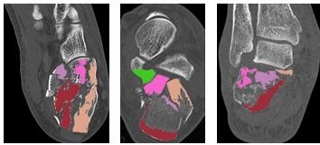
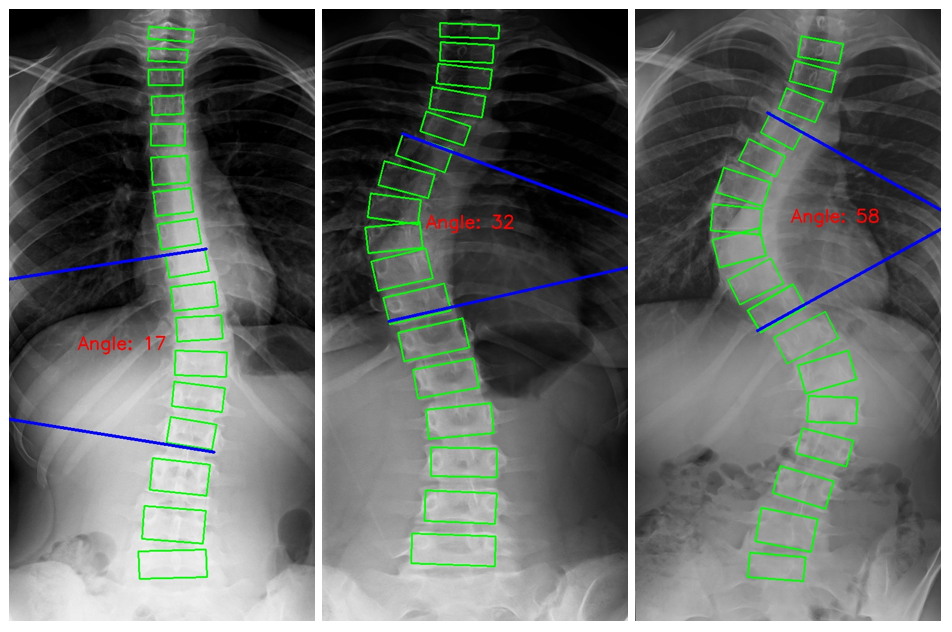

{% if site.blogfeed %}
	<div id="blogBubble" class="rounded_panel txt_lightgrey">
		<div class="top-rounded-panel grey-bg">
			<h1>Previous Research</h1>
		</div>
		<div class="content-rounded-panel">
			<!--
			<div id="blogArticles">
			</div>
                        -->
			
			<h5><br/>Moving Object Detection Using UAV</h5>
				<iframe width="230" height="130" src="../img/mov2.mp4">
		        	</iframe><br/>
			<h5><br/>People Counting Using RGB-D Camera</h5>
				<iframe width="230" height="110" src="../img/people_counting.mp4">
		        	</iframe><br/>
			<h5><br/>Car Detection YOLOv3</h5>
				<iframe width="230" height="130" src="../img/car_yolo2.mp4">
		        	</iframe><br/>
			<h5><br/>Indoor Segmentation Using UAV</h5>
				<iframe width="230" height="110" src="../img/indoor_seg.mp4">
		        	</iframe><br/>
			<h5><br/>Calcaneal Fractures Classification</h5>
				<br/>
			<h5><br/>Face Detection</h5>
				<br/>
			<h5><br/>Cobb Angle Measurement</h5>
				<br/>

		</div>
	</div>
{% endif %}
